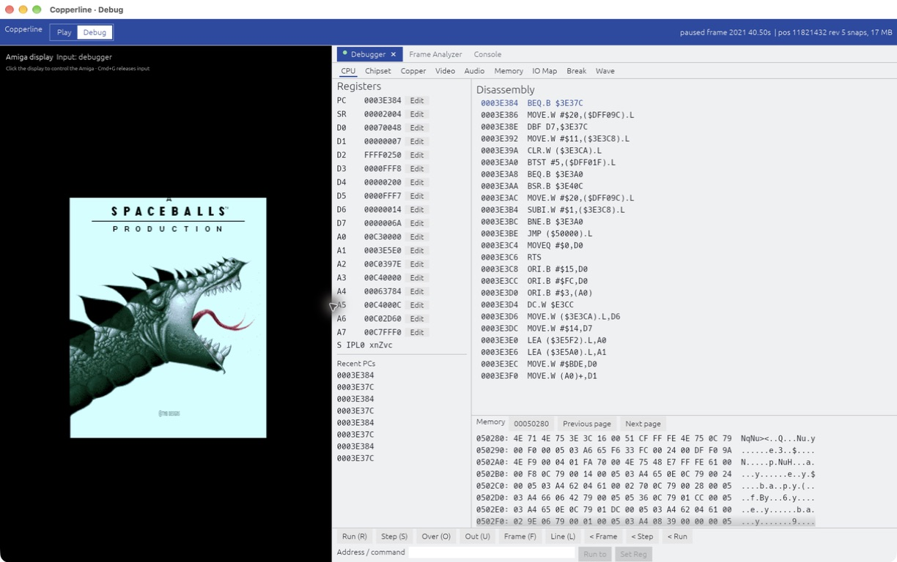
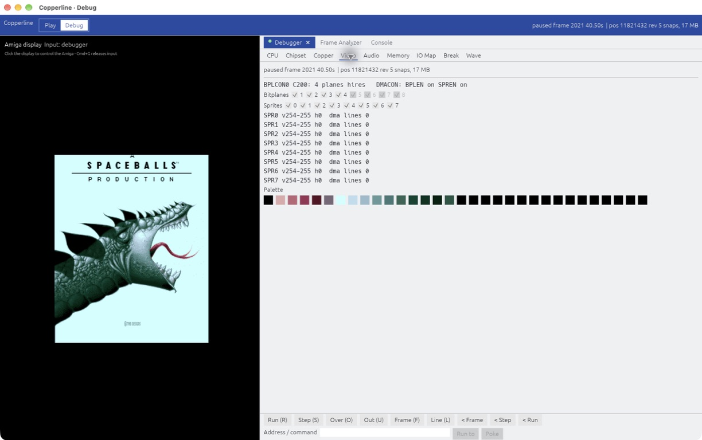
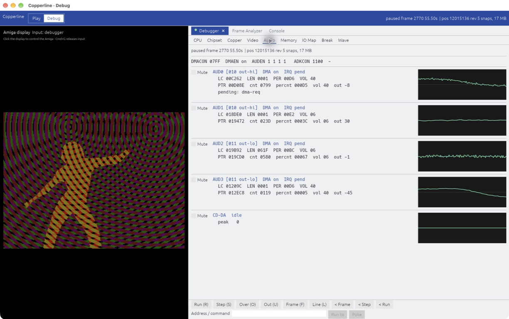
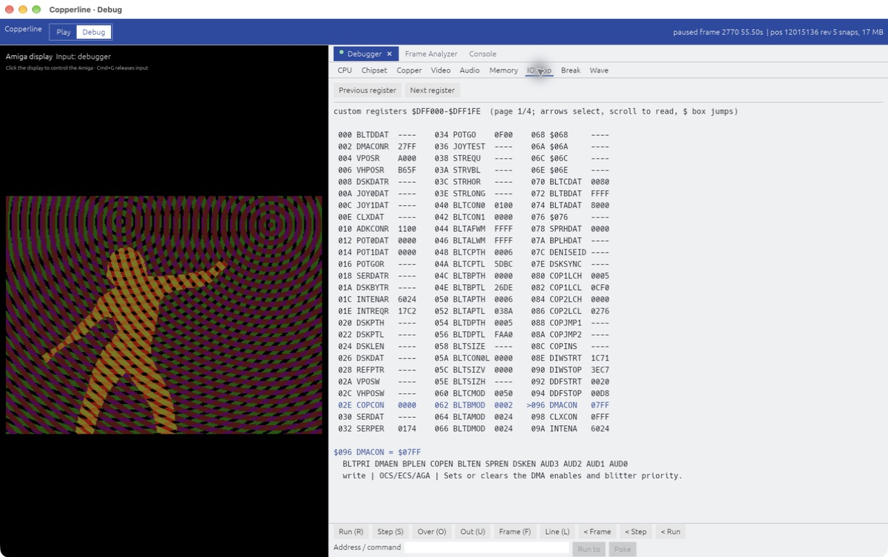
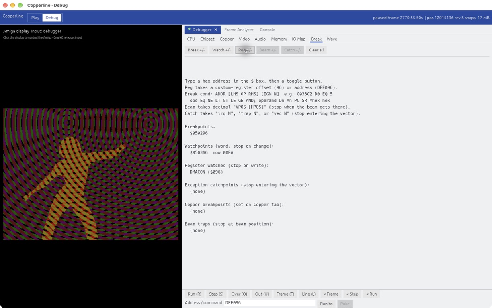
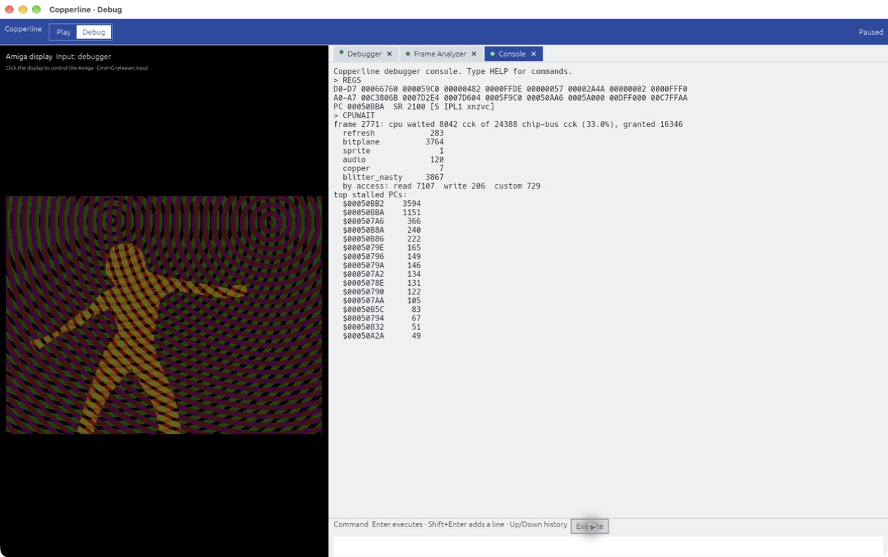
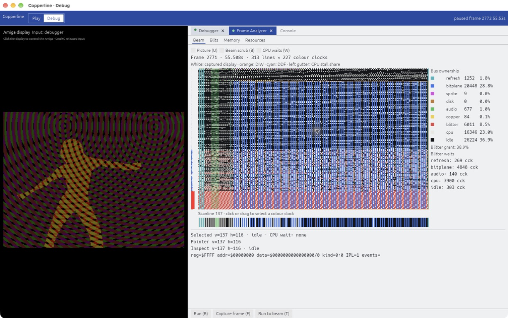

{kind=link}
Amiga hardware, modelled in detail
OCS, ECS and AGA machines with 68000–68060 CPUs, expansion boards, hard disks and CD support.
Hardware and configurationAmiga emulation · Written in Rust
An open-source Amiga emulator for games, demos and development.
For macOS, Linux, Windows and your browser.
OCS, ECS and AGA · A1000 through A4000 · CDTV and CD32

AROS, an open-source Kickstart replacement, is included. Bring your disk images; some software needs an original Kickstart ROM. Check compatibility.
For Apple Silicon and Intel Macs. Open the DMG and copy Copperline.app to Applications.
The app is ad-hoc signed. If macOS blocks the first launch, use System Settings → Privacy & Security → Open Anyway.
brew tap CopperlineHQ/copperline https://github.com/CopperlineHQ/Copperline
brew install copperlineAppImage for x86-64. Make it executable, then launch it:
chmod +x Copperline-0.21.0-x86_64.AppImage
./Copperline-0.21.0-x86_64.AppImageA Vulkan driver is required. See Linux setup and Flatpak instructions.
Extract the whole ZIP, then open copperline.exe. Keep the bundled ROMs and assets alongside it.
Choose the download for your system, or open the browser version.
The launcher starts with an A500 and AROS. Choose another machine or your own Kickstart ROM, then start it. Configuration guide.
On desktop, drag a disk image into the window or insert it from the status bar. WHDLoad archives can launch directly too.
Upgrading to 0.21? Clipboard sharing and the CD32 FMV cartridge are now opt-in. Recreate RetroArch save states after updating the core. Read the upgrade notes.
Source builds require Rust 1.95 or newer and the dependencies for your platform.
git clone https://github.com/CopperlineHQ/Copperline.git
cd Copperline
cargo build --release
./target/release/copperlineWith the Homebrew tap installed, brew install --HEAD copperline builds the latest development version.
OCS, ECS and AGA machines with 68000–68060 CPUs, expansion boards, hard disks and CD support.
Hardware and configurationTwo-player rollback Netplay across two desktops or two browsers, with up to eight spectators watching. The host shares the setup, including ROMs and supported media.
Set up NetplayA libretro core for A500, A1200 and CD32 software, with WHDLoad, playlists, save states, four local controller ports and RetroArch Netplay.
Install the coreInspect registers and memory beside the Amiga display. Rewind execution to find the instruction that changed a value.
See the Debug workspaceThe Frame Analyzer shows when the CPU, Copper, blitter and DMA channels use chip memory.
Explore frame analysisScript inputs, capture frames and replay sessions for regression tests. Debug Amiga source code from VS Code.
Scripting and development


The Debug workspace puts registers, disassembly and memory beside the Amiga display. Resize the panes, edit values and follow addresses between inspectors.





Reverse stepping replays earlier execution from snapshots. Find the last write to a memory address or run backwards to a breakpoint.
Reverse debuggingUse Cmd+B on macOS or Alt+B on Linux and Windows. Your inspectors stay ready when you return to Play.
Workspace controls and inspectorsSee which chip owns each bus cycle across a video frame. Inspect a scanline, find blitter stalls, or overlay bus activity on the picture to connect timing with what appears on screen.

Schedule inputs and captures from the command line, record a session to a .clscript file, or control a running machine through JSON-RPC.
copperline --factory --model A500 --insert-disk-after 0 df0 game.adf \
--noaudio --press-after 4 SPACE --screenshot-after 12 shot.pngRepeatable results require the same configuration, media, clock seeds and inputs. Live files, networks and physical devices can affect a run. Determinism and the host boundary.
Games, demos and Workbench run across OCS, ECS and AGA machines. Compatibility varies by software and configuration; hardware accuracy continues to improve.
Hardware behaviour is checked against CPU and chipset test suites, custom test disks and real Amigas. See the hardware documentation for details.
Found a problem? Check existing issues or report it with the version, machine configuration and steps to reproduce it. An input recording can help.
You can boot the included AROS ROM immediately. Some software needs an original Kickstart ROM; select one in the launcher if you have it. Read the setup guide.
WinUAE, FS-UAE and vAmiga have long-established compatibility. Copperline puts particular emphasis on reverse debugging, chip-bus analysis, scripting and repeatable tests. The browser build and Netplay also make it easy to try a configuration or play together.
The downloads are currently ad-hoc signed. macOS may ask you to approve the first launch in Privacy & Security. Installing with Homebrew builds Copperline from source instead.
I use hardware documentation, real Amigas and test disks as references. AI coding assistants help with implementation, tests and debugging. Changes are checked with hardware tests and regression runs.
The Amiga’s Copper is a coprocessor that runs alongside the CPU and can change display settings as the beam draws each line. Copperline takes its name from that connection.
I wanted an Amiga emulator I could automate from the command line and use to track down difficult bugs. The first milestone was getting DiagROM to display its menu.
I also repair, collect and design hardware for real Amigas. Those machines give me a reference when an emulator’s behaviour needs checking.
More about my workChat on Discord about configurations, demos and Amiga hardware.
Report an issue or contribute a fix on GitHub.
See community projects built with Copperline.
Support helps cover development hardware, testing equipment and code-signing costs. Join Patreon, or give through GitHub Sponsors, Ko-fi or PayPal.
Thank you to patrons Lee Hobson and Sphair, and contributors Bernie Innocenti, Lee Hobson, jbl007, Simon Dick, Nicolas Ramz, Ben Letchford, Volker Schwaberow and Matt Harlum.
{kind=link}
{kind=link}
{kind=link}
{kind=link}
{kind=link}